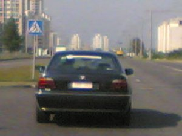
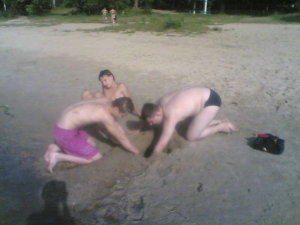

19 августа 2007 года. Вроде, обычный день. Ничего не предвещало тех ужасных событий, которые произошли позже. Я довольный собой весь день тихонько ковырял свою систему. У меня начали более-менее налаживаться отношения с девушкой. И не поверите, система заревновала!!! Вобщем, так и не получилось у меня обратно иксы в автозапуск вернуть... В глубочайшем изучении конфигов я был возвращён на землю громким но привычным звуком мессаги в ICQ-агент:
-
bash: - Дарова чуваг! Я вернулся!
Я: - Мля, так быстро??? Ты ж говорил, что надолго уежаешь?
bash: - Это долго уже закончилось, я вернулся!!! Ну, когда мне мои диски вернёшь? Кста, не забудь на них обновлённую Gentoo записать!
Я: - Мляяяяя. Делать мне нех, эти болванки писать? Лан, месяц назад обещал вернуть - верну... Ток сёдня не получится, давай завтра сутра, ок?
bash: - ok.
20 августа 2007. 12 часов дня. За стенкой слышко громкое храпение DeXPeriX, который всю ночь сидел в инете и пытался править конфиги.
- -Мля! Сволочи!!! Кто ж в такую рань музыку так громкло включает?!?! Который хоть сейчас час? 12???? Мдя, надо меньше сидеть в инете.... Тэкс, нужно отвезти bash'у его диски. Прям сейчас. Хм, только нужно сначала почту проверить, да утренний башорг (http://bash.org.ru) почитать...
- Я: - Прив Кеваль! Мля, чёт жарко. Нужно будет как-нить на речку выбраться...
Kev@l: - Угу. Жара ещё та. Нужно будет. Спешишь в гараж? Лан, не буду отвлекать. Покедова.
Через час я уже сидел у bash'a. До basic'a под шансон у него ещё не дошло, но уже близится. После часа общения и переписывания всякой инфы на флэшку наконец порешили разойтись. Но не тут то было. Мне в голову стукнуло, что опять весь день просижу за компом, а ведь день может быть оригинальным. И родилась идея поехать на речку. Прям сейчас. Сказано - сделано. Куда поехать? Решили попробовать экзотику. Поехать на пляж в район Волотова. Но не ехать же вдвоём? Звонок к Кевалю:
-
Я: - Пакуй шмотки, поехали на речку кататься, да кого-нибудь с локалки прихвати! Грызлю например...
Kev@l: - Не, GriZly родители не отпустят! :-D Мож Yava поедет, или ещё кто. Поспрашиваю.
- Я: - Чё за ****** ???!?! **!!! *? *****!!!!
Kev@l: - Сорри, деман! Меня мама покушать заставила!
Я: - А, ну тады извини чувак. Сам в аналогичные траблы попадаю...
 Ещё через час мы подъехали к Волотове:
-
Я: - Слыш, bash, я тут не местный. Так что ты скажи, когда повернуть надо будет.... Только заранее скажи!
Я: - Ух ёёёёё!!!! Bash, гляди, BMW с наклеечкой Gentoo!!!
Bash: - Хдебля???? Ух ё! Точно! Немедленно сфоткать!
[после нескольких минут попыток словить эту BMW в удобный кадр]
Bash: - Эммм. Чувак, нам в вооон тот поворот повернуть нужно было, там где ещё менты стояли...
Я: - *!!! **!!!!
-
Yava: - Чуваки, вы ж не хотите назад той же длиннючей дорогой ехать? Я короткий путь знаю! Стопудово дофига срежем! Я вам отвечаю! Для этого на следующем повороте направо поернуть! Да, тут и под мост! Да я вам отвечаю!!!
Проезжая мимо парка bash'a осенило:
- Bash: - О! Чуваки! Мы ж в Чёнки купаться едем? А у меня там девчёнка в санатории неподалёку отдыхает! Заедем?
Я: - Ой не нравится мне эта затея...
Мы едем-едем-едем в далёкие края, лежачие медведи - весёлые друзья! :-D
Пока ехали до Чёнок я показывал всем своё мастерство объезжания люков и ямок на дороге. Ява поскуливал что-то в роде, что лучше бы пошёл пешком. Но было уже слишком поздно...
Как только люки и ямки закончились я повернулся к народу и спросил:
- Я: - Ну как оно? Я настоящий хакер? :-D
 До Чёнок доехали без особых преград. Ява постоянно говорил, что за поворотом "стопудово" пост ГАИ, и чтоб я не ехал так быстро. Странно, что ему не понравилось?
Мы всё-таки добрались до Чёнок. Чуть искупнулись. Сели на песок обсыхать. И тут меня чего-то торкнуло. И мы с Кевалем начали собирать ядро. Прямо из песка. А оно постоянно рушилось, и приходилось его заново поднимать, подключать новые модули. Это вовремя заметил bash, слетал за мобилкой и зафоткал. Жесть была ещё та.
Ладно, накупались. Охота пить. Поехали в магазин. Купили двухлитровую бутылку колы. Мне не следовало столько пить за рулём... После этого попытались найти санаторий. Но для начала решили отвести Яву к нему на дачу. "Совсем близко, пацаны!". Вобщем, ехали ещё столько же. Назад дал порулить сначала Кевалю, потом Башу. Мля, моё сердце обливалось кровью! Как они терзали сцепление бедного опеля! В конце концов я не выдержал и сел обратно за руль. Продолжаем поиски!
Где-то в шесть мы нашли этот грёбаный санаторий. Но вселенско добрые девушки "мягко" намекнули, что сейчас не могут выйти, т.к. у них какое-то мероприятие. Но Bash оказался более настойчивым. Он решил лично с ними поговорить. Итак, мы втроём (я, Кеваль и Баш) забрались на территорию лагеря. Подошли к этому открытому сараю и Bash начал общаться с какой-то девушкой в голубой кофточке с бюстом примерно 3 размера. Рядом сидела ещё одна. Сюдя по всему, чтоже понравилась Bash'у, т.к. он начал с ней активно общаться. В конце концов она сказала:
-
Она: - Подождите, мальчики! Мы минут через 20 уже закончим!
") Это оказалась воспиталка! Bash, который довольно прилично младше меня клеился к воспиталке! Вот сэкс-машина! Вобщем, мы все дружно смеясь скатились по склону в кусты к машине.
Это оказалась воспиталка! Bash, который довольно прилично младше меня клеился к воспиталке! Вот сэкс-машина! Вобщем, мы все дружно смеясь скатились по склону в кусты к машине.
(P.S. Bash, я ещё тогда пообещал, что напишу про это в инете! Я держу своё слово! :-D )
Дальше мы стояли и ждали пока закончатся эти "20" минут. Болтали обо всяких пустяках - о Linux, о программинге в РНР и прочих мелочах жизни. За это время уговорили Кеваля начать учить РНР и перейти в Linux, о чём на следующий же день было забыто! :)
Мы долго орали лозунги OpenSource софта.Типа "Винда - мастдай!", "OpenSource в массы!", "Linux рулит!" и прочие. Вобщем, оттянулись от души :)
Через 40 минут начали сдавать нервы. Ровно в 19.00 вся эта байдяга закончилась. Мы пошли навещать даму сердца Bash'a. Но не тут то было! Нас остановила доблестная милиция!:
-
М: - Ну чё, молодые люди? - сказала доблестная милиция бодро помахивая дубинкой - Куда идём?
Я: - Нуу... мы эта... знакомую навестить!
M: - Какую ещё знакомую? Какая у неё фамилия?
-
M: - А чё будет, если каждый будет по 8 человек знакомых на дискотеку водить? Это мне тут беспорядки будут! Посещения до 16.00. Свободны! Если хотите пообщаться - идите в беседку вооон за те кусты.
Лишь об одном желею, что не увидел прекрасное лицо той милой дамы, из-за которой мы столько без дела под забором санатория торчали... Хотя, может, оно и к лучшему. А то сказали бы мы её пару неприятных слов, а с дамами себя так вести нехорошо! :-D
Примерно в 20.05 мы были дома у Bash'a, который любезно предоставил нам фотки со своей мобилы, некоторые из которых вы видите на этой страничке. Мы с Кевалем тоже решил ехать домой и ставить машину.
Но это ещё не конец, а самое начло большой и длинной истории. И её продолжение ещё обязательно появится в этом блоге! :)
Все песонажи реальны. Ничего выдумано не было. Некоторые действия и речи немного подукрашены, но смысл их передан корректно.
Комментарии :
Отлично погуляли! Ещё потом про следующие дни распишу!
Блиаааа....
Кста, насчёт "дамы сердца" - это как бы метафора. Просто не знал, как её культурно обозвать, вот так и придумал...
>Просто не знал, как её культурно обозвать
Хм...
Отличная сататья, бля Просто супер, DeXPeriX те респект.
Кеваль, это не статья :) Это воспоминание о том, как мы катались :)) Просто очередная запись в блоге. Яве надо дать заценить :-D 2 часть нужно будет ещё стопудово сделать. ТА, где мы семечки "GрЫzli" нашли! :-D
Чё ко мне не зашли? Я был от вас где-то в метрах 20. Оторвались бы вместе :))))))))0
Эмммм. Bash потом про тебя вспомнил, но было уже слишком поздно - мы домой уже ехали :))
Весело блин, я то ж так хочу :)
Паехали в следующий раз с нами ))
Аффтар жжош. Пешы исчо. И забудь прастенгу ))
Писец флудеры... У меня на этот пост в блоге комментов больше, чем на самую навороченную статью, линк на которую выложен на самом ЛОРе....
ЗЫ BSOD, если будет такая поездка намечаться - я тебе звякну. Мож в следующий раз вместе поедем! :)
ЗЫ2 Head Hunter, забудь про "падлянский". Этот сайт борется за чистоту рускава изыка! :-D
DeXPeriX ёпт. Уле тут моя фота делает???
Я: - Ну как оно? Я настоящий хакер?
АГА, НАЗТАЯЩИЙ ПАЭТ!
ФОТКИ КЛАССНЫЕ! {Если не сказать "проаокационные"!} ;) :D гыгы
=Tati=
Мне флажок нравицца! :)
Сори, "провокационные"! :)
PS: Я НИБЛАНДИНКА!!!! :)))
Tati, рад видеть тебя в моём скромном обителе...
За поэта - спасибо :) Озарение какое-то в голову ударило. Было около часу ночи, мозг уже не варил нифига... Вот и получился эффект как от забористой травы :)
P.S. Реально, прекращай читать башорг. У тебя ещё есть шанс спастись. Ты ведь почти нормальный человек, не то что мы... Да ещё и девушка красивая. Бросай, пока не поздно!
Башорг при том, что разъедает моск...
PS: Курс интенсивной терапии может помочь
PPS: Тады в личку! :-D Или на мыло... ;)
PPPS: Даааа. Про assign весело было. Только раньше это было нашей личной маленькой тайной, а теперь об этом знает весь инет :( У тебя случаем комплексов по поводу блондиности нету? ;) :-D
Башорг читаю во время депрессии - помогает!
PS: А мне и так харажо! :)
PPS: Здрасьте! гыгы
PPPS: У меня отвращение к тупизму. Блондинка - это субъект, который отличается от окружающих своей неповноримой, непредсказуемой тупостью. Это самое "крепкое" ругательство по отношению ко мне! :P
DeXPeriX, Z-Хай от гуру.
Уважуха тебе, из твоего блога я вспомнил, что обещал зайти к тебе поправить X-ы.
Так, что договоримся на дату и время - я человек свободный )))
Мож ещё поболтаем как в прошлый раз.
P.S. Я тебя раскусил, почему ник DeXPeriX (помнишь, я говорил "сбей DeXPeriXа", вот, вот..) Короче подрробнее расскажу в ICQ
йптыц, оЧеПятался в твоём нике, ты уж прости меня грешного